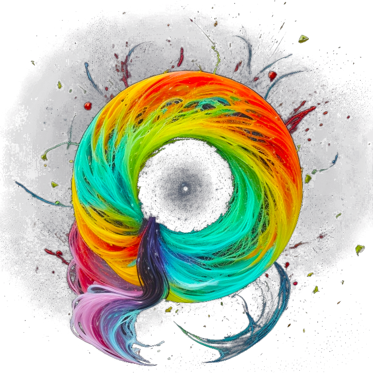
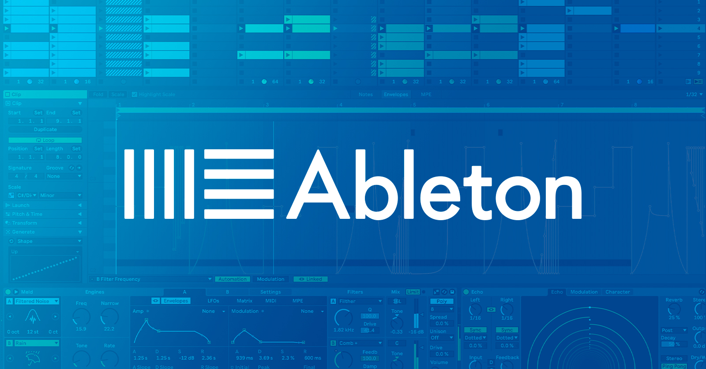
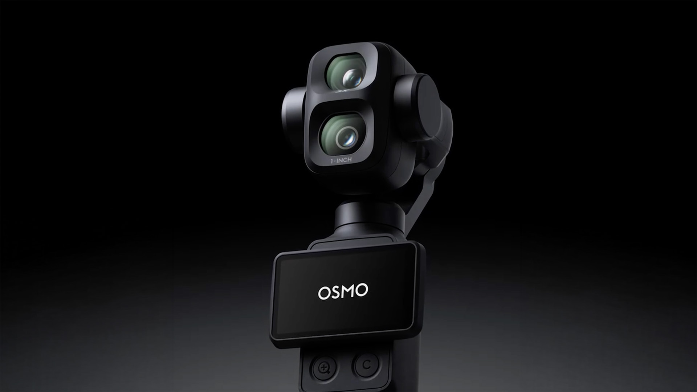
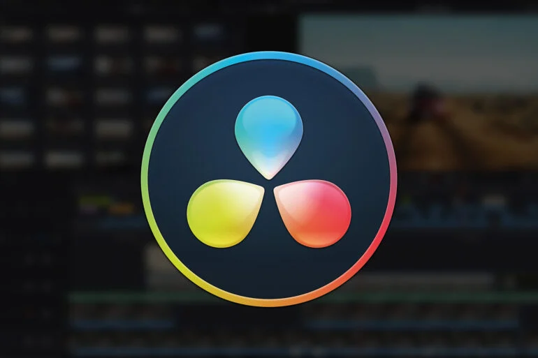

Galéria
Válogatás filmzenékből, trailerekből és vizuális projektekből.

Hirdetésedet akár a saját képi anyagaidból is elkészítem, de ha szükséges, elmegyek hozzád, és leforgatom a nyersanyagot. Megvágom a felvételeket, narrációval és hangeffektekkel egészítem ki, és ha igazán egyedi végeredményt szeretnél, zeneszerzést is kérhetsz hozzá. A végeredmény nemcsak látványos, hanem hangzásában is igényes lesz. A beszédhangot tisztítom és érthetővé teszem, a zenét és az effekteket a képhez igazítva keverem és maszterelem. A végső hangerőt pedig a videó felhasználási céljához igazítom, hogy az anyag weboldalon, közösségi médiában vagy más online felületen is megfelelően szóljon.

Egyedi filmzenék, dalszerzés és sound design készítése. Ha a videódhoz vagy filmedhez saját, egyedi hangzást szeretnél, a zenei ötlettől a kész masterig megvalósítom.

Forgatáshoz egy beépített stabilizátoros zsebkamerával érkezem. Kicsi és talán furán is nézki, de nem szabad alábecsülni. A LOG színprofilnak köszönhetően rengeteg videósnak lett a kedvenc eszköze.

Precíz vágás, ritmusos történetmesélés és mozis színkezelés DaVinci Resolve-ban. A képi váltásokat és az átvezető effekteket szorosan a zene lüktetéséhez igazítom, a színkorrekcióval és a kreatív színezéssel pedig egységes, látványos képi világot alakítok ki.
Válogatás filmzenékből, trailerekből és vizuális projektekből.
Kérdésed van, vagy árajánlatot szeretnél kérni? Írj bizalommal:
Sipos Attila